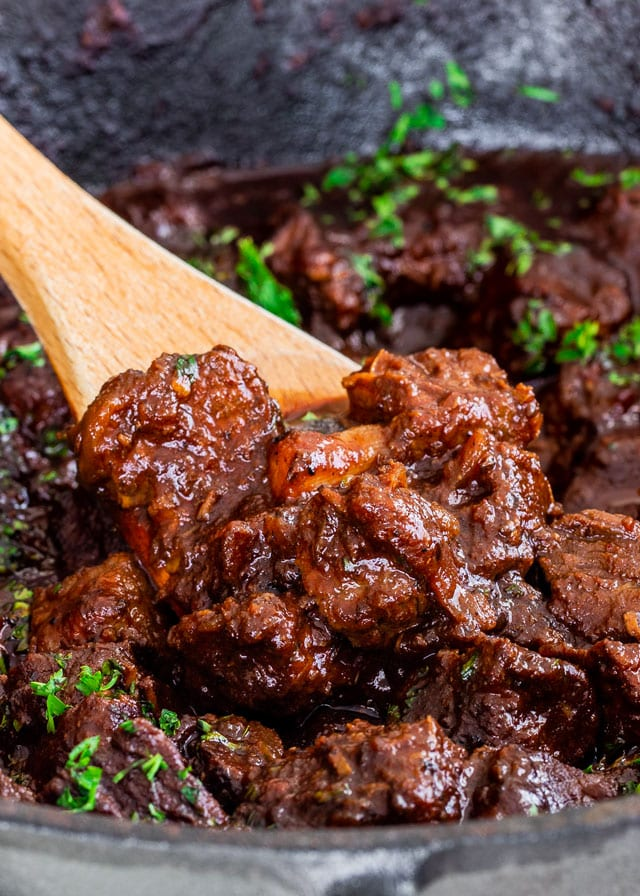

Goulash

A hearty eastern European stew where paprika is the star.
Ingredients
- 1kg beef or pork stewing steak
- 1 large onion, diced
- 5 cloves of garlic, minced
- 1 carrot, diced
- 3 tbsp smoked paprika
- 1 tsp thyme
- 1 tsp chili powder
- 1 glass white wine
- 500ml beef stock
- salt and pepper
Steps
- Heat 1 tbsp oil in a large casserole. Add the meat in batches and fry on medium heat until browned. Set aside. Don't you dare through away those juices.
- When all the meat is browned, add the onion and carrot to the same panel and saute on a low heat until they're soft, about 10 minutes. Add the garlic after 5 minutes. Add the paprika (that's not a typo by the way, you need a buttload of paprika for this) and chili powder and stir for a couple of minutes to wake up the spices.
- Add the wine and turn up the heat. Stir to deglaze the pan. Cook until most of the alcohol has evaporated.
- Add the meat back to the pan and stir it around in the thick red sauce. Add the stock and turn up the heat until it starts to boil. Turn the heat back down and simmer for 1 hour or until the meat is tender and the sauce is thick. If it's getting too dry, add some more stock or water.
- Serve with pasta, rice or just some crusty bread, and a dollop of sour cream or creme freche.